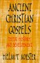

Home > Other Christian Text Sources > The Lost Sayings Gospel Q
According to the Two Source Hypothesis accepted by a majority of contemporary scholars, the authors of Matthew and Luke each made use of two different sources: the Gospel of Mark and a non-extant second source termed Q. The siglum Q derives from the German word "Quelle," which means "Source." Q primarily consists of the "double tradition" material, that which is present in both Matthew and Luke but not Mark. However, Q may also contain material that is preserved only by Matthew or only by Luke (called "Sondergut") as well as material that is paralleled in Mark (called Mark/Q overlaps). Although the temptation story and the healing of the centurion's son are usually ascribed to Q, the majority of the material consists of sayings. For this reason, Q is sometimes called the Synoptic Sayings Source or the Sayings Gospel. Some scholars have observed that the Gospel of Thomas and the Q material, as contrasted with the four canonical gospels, are similar in their emphasis on the sayings of Jesus instead of the passion of Jesus.
Arguments in favor of the Two Source Hypothesis can be found in the essay on The Existence of Q.
On the matter of whether Q was written, Tuckett writes (The Anchor Bible Dictionary, v. 5, p. 568): "The theory that Q represents a mass of oral traditions does not account for the common order in Q material, which can be discerned once Matthew's habit of collecting related material into his large teaching discourses is discounted (Taylor 1953, 1959). Such a common order demands a theory that Q at some stage existed in written form."
C. M. Tuckett comments on the argument that variations between Matthew and Luke are due to variant translations of an Aramaic Q (op. cit., pp. 567-568):
It is doubtful if more than a very few cases of variation between Matthew and Luke can be explained in this way. The Semitic nature of Q's Greek does not demand an Aramaic Vorlage; influence from LXX is quite conceivable in a Greek-speaking Jewish-Christian milieu. Many of the alleged translation variants turn out to be simply cases of synonyms, and the differences between Matthew and Luke can often be explained just as well as due to the redactional activity of the evangelists (Kloppenborg 1987). For example, in Luke 11:41, Luke's "give alms" may well be LkR (Lukan redaction), reflecting Luke's concern for almsgiving. In other parts of the Q material, the verbal agreement between Matthew and Luke amounts to virtual verbal identity in Greek (Luke 3:7-9; 11:9-10 and pars.). In these instances the measure of verbal agreement seems to demand a common Greek source. Further, some features of Q's Greek can be shown to be characteristic of a source originally written in Greek and uncharacteristic of translation Greek (Turner 1969). This suggests that much of the Q material was available to Matthew and Luke in Greek form.
Udo Schnelle comments on the provenance of Q (The History and Theology of the New Testament Writings, p. 186):
The Sayings Source presumably originated in (north) Palestine, since its theological perspective is directed primarily to Israel. The proclamations of judgment at the beginning and end of the document are directed against Israel (cf. Luke 3.7-9Q; Luke 22.28-30Q), numerous logia are centered on Palestine by their geographical references and the cultural world they assume (cf. only Luke 7.1Q; 10.13-15Q), the bearers of the Q tradition understand themselves to be faithful to the Law (cf. Luke 16.17Q; Luke 11.42Q), and Q polemic is directed against Pharisees (cf. e.g. Luke 11.39b-44Q).
Helmut Koester comments on the provenance of Q (Ancient Christian Gospels, p. 164):
 Q 10:13-15 announces the coming judgment explicitly with the view to two Galilean towns, Chorazin and Bethsaida: even Tyre and Didon will be better off in the coming judgment. And the same saying threatens that Capernaum will be condemned to Hades. Except for the lament over Jerusalem (Q 13:34-35) and the localization of John the Baptist's activity in the area of the Jordan (Q 3:3), these are the only names of places which occur in Q. It is, therefore, tempting to assume that the redaction of Q took place somewhere in Galilee and that the document as a whole reflects the experience of a Galilean community of followers of Jesus. But some caution with respect to such conclusion seems advisable for several reasons. One single saying provides a very narrow base. Polemic against the Pharisees cannot confirm Galilean provenence - Greek-speaking Pharisees could be found elsewhere in the diaspora, viz., Paul who persecuted the church in Greek-speaking synagogues, probably in Syria or Cilicia. Even the sayings used for the original composition of Q were known and used elsewhere at an early date: they were known to Paul, were used in Corinth by his opponents, employed perhaps in easter Syria for the composition of the Gospel of Thomas, and quoted by 1 Clement in Rome at the end of the 1st century. The document itself, in its final redacted form, was used for the composition of two gospel writings, Matthew and Luke, which both originated in the Greek-speaking church outside of Palestine.
Udo Schnelle writes about the dating of Q (op. cit., p. 186):
The Sayings Source was composed before the destruction of the temple, since the sayings against Jerusalem and the temple in Luke 13.34-35Q do not presuppose any military events. A more precise determination of the time of composition must remain hypothetical, but a few indications point to the period between 40 and 50 CE: (1) Bearers of the sayings tradition, which possibly extends all the way back to pre-Easter times, included both wandering preachers of the Jesus movement as well as local congregations. Thus the conditions in which the Sayings Source originated included both continuity with the beginnings and with the developing congregational structures across the region. (2) The Sayings Source presupposes persection of the young congregations by Palestinian Jews (cf. Luke 6.22-23 Q; Luke 11.49-51 Q; Luke 12.4-5 Q; 12.11-12 Q). About 50 CE Paul mentions in 1 Thess. 2.14-16 a persecution of Christians in Judea that had already taken place. The execution of James the son of Zebedee by Agrippa I (cf. Acts 12.2) occurred around 44 CE. (3) The positive references to Gentiles in Q (cf. Luke 10.13-15Q; Luke 11.29-31Q; Matt. 8.5-13 Q; Matt. 5.47 Q; Matt. 22.1-10 Q) indicate that the Gentile mission had begun, which is probably to be located in the period between 40 and 50 CE.
Burton Mack writes about Mark and Q (The Lost Gospel, pp. 177-179):
Mark wrote his story of Jesus some time after the war and shortly after Q had been revised with the Q3 additions. If we date Q3 around 75 C.E. to give some time for the additions obviously prompted by the ware, Mark can be dated between 75 and 80 C.E. . . . For Mark, Q was extremely useful, for it had already positioned Jesus at the hinge of an epic-apocalyptic history, and it contained themes and narrative material that could easily be turned into a more eventful depiction of Jesus' public appearance. Q provided Mark with a large number of themes essential to his narrative. He was taken with the epic-apocalyptic mythology, the theme of prophetic prediction, and the announcment of judgment upon the scribes, Pharisees, and "this generation." The figure of the son of man intrigued him, as did the notion that the kingdom of God would be fully revealed only at the eschaton when the son of man (or Jesus, according to Mark) (re)appeared. Q also provided material that could easily be turned to advantage as building blocks in a coherent narrative account. The John-Jesus material was a great opener. The figure of the holy spirit was ready-made to connect the Q material on John and Jesus with the miracle stories Mark would use. Q's characterization of Jesus as the all-knowing one could be used to enhance his authority as a self-referential speaker in the pronouncement stories Mark already had from his own community. The notion of Jesus as the son of God could be used to create mystique, divide the house on the question of Jesus' true identity, and develop narrative anticipation, the device scholars call Mark's "messianic secret." The instruction for the workers in the harvest could be turned into a mission charge, and the theme of discipleship could be combined and given narrative profile by introducing a few disciples into the story. The apocalyptic predictions at the end of Q could then become instructions to the disciples at that point in the story where Jesus turns to go to Jerusalem. And, as scholars know, there are a myriad of interesting points at which the so-called overlaps between Mark and Q show Mark's use of Q material for his own narrative designs.
Udo Schnelle comments on the relationship between Q and Mark (op. cit., p. 195):
The common material in Q and Mark (cf. Mark 1.2; 1.7-8; 1.12-13; 3.22-26, 27-29; 4.21, 22, 24, 25; 4.30-32; 6.7-13; 8.11, 12; 8.34-35; 8.38; 9.37, 40, 42, 50; 10.10-11; 10.31; 11.22-23; 12.37b-40; 13.9, 11, 33-37) has repeatedly led to the hypothesis of a literary dependence of Mark on Q. But if Mark had known Q, his criteria for selecting the material he used, and especially the sayings he omitted, cannot be explained. The reasons given remain hypothetical (Mark as supplement to the sayings source, Q as supplement to Mark, a critical debate by Mark with the Christology of the sayings source), and fail to make plausible the considerable differences in the literary configuration and theological orientation between Q and Mark. A direct literary connection between Mark and Q must be regarded as improbable. The text complexes they share point rather to independent access of each to old Jesus-traditions, but contacts between the two streams of tradition at the pre-redactional level are not to be excluded.
Tuckett observes (op. cit., pp. 570-571):
A much discussed feature of Q arises out of Q's version of the mission charge. Here the Q missionaries are told to take absolutely nothing for their journey, not even the basic necessities of life such as food or clothing. Elsewhere, too, Q sayings seem to presuppose an extremely radical break with past personal ties. The Q Christians are told that they must "hate" their own families (Luke 12:46 par.); they are told that they must take up their cross (Luke 14:27 par.). They are not to worry about their daily needs (Luke 12:22-34 par.) since God will provide for them. They are to be followers of the Son of Man, who has nowhere to lay his head; and they are to break with their past in such a radical way that they are not even to go home to bury a member of their own family (Luke 9:57-60 par.). These sayings have led to the plausible theory that behind Q lies a group of Christians who obeyed these instructions to the letter. Hence Q presupposes the existence of wandering prophets or charismatics who made a radical break with their own homes and went about preaching the message of the kingdom (Hoffmann 1972; Theissen 1979). However, the presence of sayings like 10:2 par. may suggest that the final stage of Q also presupposes a group of settled Christians providing backup support for the wandering preachers (Zeller 1982, 1984).
Udo Schnelle summarises the stratification proposed by Kloppenborg (op. cit., pp. 188-189):
J. S. Kloppenborg proposes to explain the origins of Q in terms of a three-stratum model. In his view the oldest layer of Q was composed of 'wisdom speeches,' including the nuclear elements of the Sermon on the Plain/Mount and the Missions Discourse, as well as Luke 11.2-4, 9-13 Q; Luke 12.2-12, 22-34 Q; Luke 13.24-14.35 Q, and others. At a later stage this complex was combined with, and partly reshaped by, materials that treat the proclamation of judgment against Israel (preaching of the Baptist, the nobleman of Capernaum, the Baptist's question, the Beelzebul controversy, the demand for signs, the Q apocalypse). The third and final stratum was provided by the temptation story, which presents Jesus as a model for one's relationship to God.
Helmut Koester states (op. cit., p. 150):
The original version of Q must have included wisdom sayings as well as eschatological sayings. It cannot be argued that Q originally presented Jesus as a teacher of wisdom without an eschatological message. The close relationships of the Gospel of Thomas to Q cannot be accidental. Since the typical Son of man sayings and announcements of judgments which are characteristic of the redaction of Q are never paralleled in the Gospel of Thomas, it is evident that its author had no knowledge of the final version of Q, nor of the secondary apocalyptic interpretation that the redactor of Q superimposed upon earlier eschatological sayings. The Gospel of Thomas is either dependent upon Q's earlier version or upon clusters of sayings employed in its composition.
Helmut Koester observes (op. cit., p. 159):
For the followers of Jesus whose tradition is represented in the original composition of Q, the turning point of the ages is the proclamation of Jesus. In the sayings of Jesus, his followers find the continuation of this announcement. These sayings are not only reassurance of the eschatological moment, they are also the rule of life for the community of the new age insofar as Jesus continues to speak in sayings of wisdom and in rules for the community. Jesus may indeed have been viewed as the heavenly Wisdom. This is especially evident in Q 10:21-22 which defines the relationship of Jesus to the Father in terms of the established sapiental concept of Wisdom and God. If Q 13:34-35, the lament over Jerusalem, should belong to the original composition of Q, Jesus is also the one who sends Wisdom's envoys.
Just as the departure of Wisdom or of her envoy does not constitute a change in the urgency of the message, so too Jesus' death would not be seen as a crisis of his proclamation. The disciples are already called to follow in the steps of Jesus, in their discipleship (Q 9:57-62) as well as in their task to carry on his proclamation (Q 10:2-12). Jesus' departure would make this call even more urgent. The ages have already begun to turn through Jesus' announcement. Any emphasis upon Jesus' suffering, death, and resurrection would e meaningless in this context. Thus Q can not be seen as a teaching supplement for a community whose theology is represented by the Pauline kerygma. Q's theology and soteriology are fundamentally different.
Helmut Koester states (op. cit., p. 165): "On the other hand, the Synoptic Sayings Source is an important piece of evidence for the continuation of a theology of followers of Jesus that had no relationship to the kerygma of the cross and resurrection. It is evident now that this was not an isolated phenomenon. The opponents of Paul in 1 Corinthians 1-4, the Gospel of Thomas, the Dialogue of the Savior, and the opponents of the Gospel of John in the Johannine community all shared this understanding of the significance of Jesus' coming."
Tuckett writes (op. cit., p. 571)
Recent studies have shown how fruitful a redaction-critical approach to Q can be. At first sight such work may appear to be extremely hypothetical, being based on what some would argue is a very questionable presupposition (the very existence of Q as a single document). However, the very distinctiveness of the Q material as shown by the recent redaction-critical studies of Q is in itself an indication that this material did exist as a separate entity at some stage in the development of the synoptic tradition. Theories about the theology of Q, if successful, may therefore provide support for the hypothesis of the existence of Q. Q may also alert us to the great variety within primitive Christianity. It shows us a version of the Christian faith which is perhaps less cross centered than, say, Paul or Mark; but it is nonetheless real for that.
Go to the Chronological List of all Early Christian Writings
Please buy the CD to support the site, view it without ads, and get bonus stuff!
Early Christian Writings is copyright ©
Peter Kirby <E-Mail>.
Kirby, Peter. "The Lost Sayings Gospel Q." Early Christian Writings. <http://www.earlychristianwritings.com/q.html>.